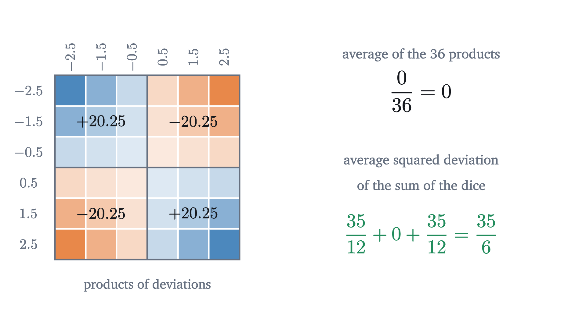
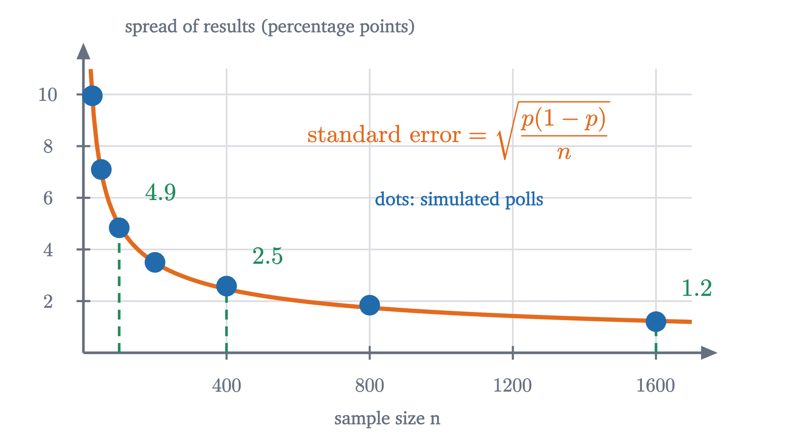
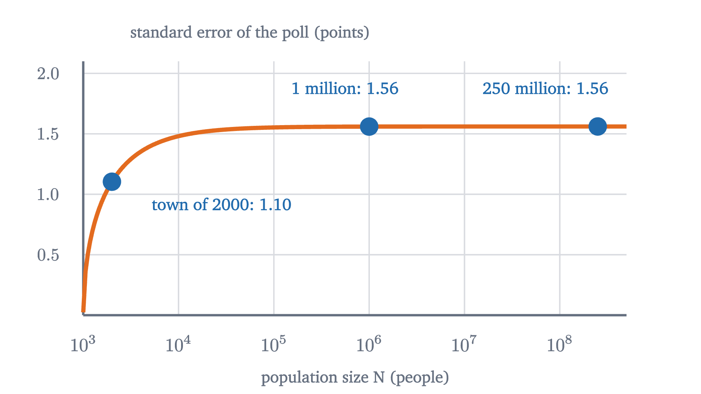
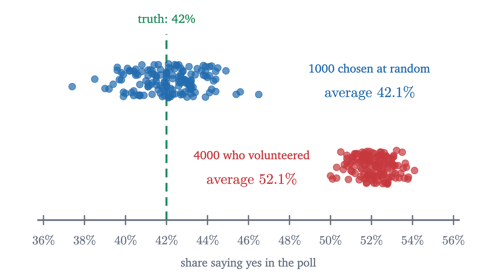

Standard error: how 1,000 people speak for a country
A random sample's accuracy depends on its own size, not on the population's. We prove the square-root law for the standard error and see its limits.
AssumesThe central limit theorem: why bell curves are everywhereExpected value and the surprising power of adding averages
A national opinion poll typically questions about a thousand people. A large country has a couple of hundred million adults, so the poll hears from roughly one adult in two hundred thousand, and the newspapers report the result as accurate to within three percentage points.
That sounds impossible, and the natural repair makes it worse. Surely a poll should sample a decent fraction of the population, say one percent? One percent of a town of 5,000 is 50 people, and one percent of a country of 200 million is two million. The first poll would be nearly worthless and the second absurdly wasteful. The truth is that a random sample of a thousand does essentially the same job for a city, a country, or a planet. This lesson explains why, proves the formula behind the “three points”, and then looks at what that formula does not protect you from.
One population, many possible polls
To see how a poll behaves we need a population whose truth we know. Take a population in which exactly 42% would answer yes to some question. A poll questions $n$ people chosen at random and reports the share of them who say yes. Call that share $\hat p$ (read “p-hat”), to distinguish it from the true share $p = 0.42$.
The essential point is that $\hat p$ depends on who happened to be chosen. A different draw gives a different answer.
Each sample misses the truth by some amount, called its sampling error. In practice we take one poll and never learn its error, because we do not know $p$. What we can study is the whole collection of results that polls of this kind produce. That collection is called the sampling distribution of $\hat p$. The figure at the top shows it for polls of 1000: results pile up symmetrically around 0.42, with most of them within two or three points. If we can say how wide that pile is, then we know how far a single poll is likely to be from the truth.
The smallest poll, by hand
Take $n = 2$. Two people are chosen independently, each saying yes with probability 0.42.
Pause and try
List the possible values of $\hat p$ for a poll of two people and find their probabilities. Then compute the mean and the variance of $\hat p$. Recall that the variance of a random variable is the expected squared deviation from its mean.
Show answerHide answer
Both say no with probability $0.58^2 = 0.3364$, giving $\hat p = 0$. Exactly one says yes with probability $2 \times 0.42 \times 0.58 = 0.4872$, giving $\hat p = \frac12$. Both say yes with probability $0.42^2 = 0.1764$, giving $\hat p = 1$. The mean is $\frac12(0.4872) + 1(0.1764) = 0.42$. The variance is $E[\hat p^2] - 0.42^2 = \frac14(0.4872) + 0.1764 - 0.1764 = 0.1218$.
Two things in that answer are worth a second look. The mean of $\hat p$ is exactly the true share, 0.42: the poll is right on average. And its variance, 0.1218, is exactly half of $0.42 \times 0.58 = 0.2436$, which is the variance of a single person’s answer scored as 1 for yes and 0 for no. (One answer has mean $p$ and variance $p(1 - p)^2 + (1-p)p^2 = p(1-p)$.) With two people, the variance was divided by two. We should suspect that with $n$ people it is divided by $n$.
The spread depends on the sample size
The simulated spreads are 5.3, 2.6 and 1.2 points. Sixteen times the people bought four times the precision. That is what division of the variance by $n$ would predict: variance is squared spread, so dividing the variance by 16 divides the standard deviation by 4. Now we prove it.
Why the variance of a mean is $\sigma^2/n$
The proof needs the vocabulary of the lesson on expected value. A random variable $X$ is a function on a sample space; its expected value $E[X]$ is the probability-weighted average of its values; and expectation is linear, meaning $E[X + Y] = E[X] + E[Y]$ and $E[aX] = aE[X]$ for a constant $a$, whether or not $X$ and $Y$ have anything to do with each other. The variance is $\operatorname{Var}(X) = E[(X - \mu)^2]$ where $\mu = E[X]$. Two random variables $X$ and $Y$ are independent if $P(X = x \text{ and } Y = y) = P(X = x)\,P(Y = y)$ for all values $x$ and $y$.
Variance is not linear. The variance of a sum involves a square of a sum, and a square of a sum has a cross term:
Everything depends on what the cross term does on average. Here it is for two dice, where each deviation from 3.5 is one of $\pm 0.5, \pm 1.5, \pm 2.5$.

For independent variables the cross term always averages to zero, for the reason the grid shows: whatever the first deviation is, the second is as likely to be on either side of its own mean, in exact balance. Here is the argument in general.
Independence is used exactly once, to kill the cross term. Without it the cross term can be positive or negative, and the theorem is false: if $Y = X$ then $\operatorname{Var}(X + Y) = \operatorname{Var}(2X) = 4\operatorname{Var}(X)$, which is twice what the theorem would give.
The two factors of $n$ have different origins. Adding $n$ independent quantities multiplies the variance by $n$: the sum is more variable than any one term. Dividing by $n$ to form the average divides the variance by $n^2$. The net effect is one factor of $n$ in the denominator.
For our polls, $\sqrt{0.42 \times 0.58} \approx 0.494$, so the standard error is $0.494/\sqrt n$: 4.9 points at $n = 100$, 2.5 at 400, 1.2 at 1600. The simulated 5.3, 2.6 and 1.2 agree with these to within the scatter expected of a standard deviation estimated from only 150 polls, which is about 6% of its value. The standard error and the standard deviation are easy to confuse. The standard deviation $\sigma$ describes how much individuals differ from one another, and collecting more data does not change it. The standard error describes how much the average would differ from one sample to another, and it shrinks as the sample grows.

The population size is not in the formula
Look at $\sigma/\sqrt n$ again. There is no symbol in it for the size of the population. The proof never mentioned it. All that was assumed is that each draw is independent of the others and has the population’s mean and variance, which is what happens if each person is picked at random with replacement, so that the same person could in principle be picked twice.
Pause and try
A poll of 1000 people is taken in a city of one million, and another poll of 1000 in a country of 250 million. In both, 42% of the population would say yes. Which poll has the smaller standard error?
Show answerHide answer
Neither, to any accuracy that matters. Both have standard error $\sqrt{0.42 \times 0.58 / 1000} \approx 0.0156$, or 1.56 percentage points. The polls differ in the fraction of the population they reach, by a factor of 250, and that fraction is irrelevant.
A cook tasting soup is the standard comparison. If the pot is well stirred, one spoonful tells you how salty it is, whether the pot holds two liters or two hundred. What matters is that the spoonful is a fair sample, and how big the spoon is.
Real polls do not question anyone twice, so they sample without replacement, and then the draws are very slightly dependent. The effect is known exactly. For a simple random sample of $n$ from a population of $N$, the variance of the sample mean is $\frac{\sigma^2}{n}$ multiplied by the finite population correction $\frac{N - n}{N - 1}$. (The last problem derives it.) The correction is essentially 1 when the sample is a small part of the population, and it reaches 0 when $n = N$, since then the “sample” is a census and has no sampling error at all.

From standard error to margin of error
The standard error is a standard deviation, and the central limit theorem says what shape goes with it: for large $n$, the sample mean is approximately normal around $\mu$. By the 68-95-99.7 rule, about 95% of samples give a mean within two standard errors of the truth. Pollsters call two standard errors (more exactly 1.96) the margin of error, and the next lesson turns it into a confidence interval.
For a poll of 1000 with $p$ near one half, the standard error is $\sqrt{0.5 \times 0.5/1000} \approx 0.0158$, and twice that is 3.2 points. That is the origin of the “plus or minus three points” attached to polls of about a thousand people. In the simulation at the top of the page, 189 of the 200 polls, 94.5%, landed within two standard errors of 42%.
One practical difficulty remains. The formula uses $\sigma$, or $p$, which are properties of the population and are exactly what we do not know. In practice they are replaced by estimates from the sample itself: $\hat p$ in place of $p$, and the sample standard deviation $s$ from the first lesson in place of $\sigma$. For samples of decent size this substitution changes little, because $\sqrt{p(1-p)}$ moves slowly: it is 0.494 at $p = 0.42$ and 0.500 at $p = 0.5$.
Worked examples
What the formula does not cover
Everything above assumed a random sample: each person equally likely to be chosen, and each chosen person answering. The standard error measures the error due to the luck of the draw and nothing else.
In 1936 the magazine Literary Digest mailed questionnaires to ten million Americans, drawn from telephone directories and car registrations, and about 2.4 million replied. From this enormous sample it predicted that Alf Landon would beat Franklin Roosevelt with about 57% of the vote. Landon received about 37%.
Pause and try
Use the formula to compute the standard error of a sample proportion with $n = 2{,}400{,}000$ and $p$ near one half. What does the size of the Digest’s actual error tell you?
Show answerHide answer
$\sqrt{0.25/2{,}400{,}000} \approx 0.00032$, about three hundredths of a percentage point. The actual error was about 20 points, more than six hundred standard errors. Chance cannot produce that. The sample was not a random one: people with telephones and cars in 1936 were richer than average, and those who chose to reply differed again from those who did not.
A systematic difference between the sample and the population is called bias. The sampling error shrinks like $1/\sqrt n$. Bias does not shrink at all.

A large biased sample is worse than a small one in one respect: its results are tightly clustered, which looks like precision. In the same 1936 election George Gallup used a sample of about 50,000, chosen to resemble the electorate, and called the winner correctly.
Two more cautions belong here. If the draws are not independent, for instance because whole households or whole classrooms are sampled together, the cross terms in the proof do not vanish, and the standard error is larger than $\sigma/\sqrt n$. And if the population has no finite variance, as with the flashlight distribution of the last lesson, there is no $\sigma$ to divide.
Stepping back
The paradox at the start came from thinking of a sample as a piece of the population, which ought to be a respectable fraction of it. A random sample is better thought of as $n$ independent measurements of the same unknown number, each one noisy. Averaging independent noisy measurements cancels the noise at the rate $1/\sqrt n$, because the variances add while the average divides by $n$, and nothing in that argument asks how many measurements were available in principle. The same argument runs under every use of averaging in science, from repeated weighings to clinical trials.
The square root cuts both ways. It is why a thousand people suffice, and it is also why the next decimal place of accuracy costs a hundred times as much. And it describes only the error that randomness creates. Whether the sample was fair is a separate question that no formula answers.
Check yourself
A random sample of 400 households gives a mean weekly grocery bill of $150, and the standard deviation of the bills is $60. A second survey will use 1600 households. What happens to the standard error of the mean?
Problems
The first three apply the formula. The next three test what it does and does not assume. The last two are proofs.
Problem 1
In a random sample of 400 students, 120 say they walk to school. Estimate the proportion who walk, and give the standard error and the margin of error.
Show solutionHide solution
$\hat p = \frac{120}{400} = 0.30$. The standard error is $\sqrt{0.30 \times 0.70/400} = \sqrt{0.000525} \approx 0.0229$, or 2.3 points. The margin of error is about $2 \times 2.3 = 4.6$ points: “30%, give or take about 5”.
Problem 2
A random sample of 64 light bulbs has a mean lifetime of 1010 hours and a sample standard deviation of 120 hours. Find the standard error of the mean, and the range within two standard errors of the sample mean.
Show solutionHide solution
Using $s = 120$ in place of $\sigma$, the standard error is $\frac{120}{\sqrt{64}} = 15$ hours. Two standard errors either side of 1010 is the range from 980 to 1040 hours.
Problem 3
A poll of 600 people has a certain margin of error. How many people are needed to halve it? To cut it to a third?
Show solutionHide solution
The margin is proportional to $1/\sqrt n$. To halve it, $\sqrt n$ must double, so $n$ must be multiplied by 4: 2400 people. To cut it to a third, $n$ must be multiplied by 9: 5400 people.
Problem 4
A population consists of three equally likely values, 1, 2 and 6. (a) Find its mean $\mu$ and variance $\sigma^2$. (b) List all nine equally likely samples of size 2 drawn with replacement, and the mean of each. (c) Verify directly that the nine sample means have mean $\mu$ and variance $\sigma^2/2$.
Show solutionHide solution
(a) $\mu = \frac{1 + 2 + 6}{3} = 3$. The squared deviations are $4, 1, 9$, so $\sigma^2 = \frac{14}{3}$. (b) The samples and their means: $(1,1) \to 1$; $(1,2)$ and $(2,1) \to 1.5$; $(1,6)$ and $(6,1) \to 3.5$; $(2,2) \to 2$; $(2,6)$ and $(6,2) \to 4$; $(6,6) \to 6$. (c) The nine means add up to $1 + 1.5 + 1.5 + 3.5 + 3.5 + 2 + 4 + 4 + 6 = 27$, so their mean is 3. Their squared deviations from 3 are $4$, $2.25$, $2.25$, $0.25$, $0.25$, $1$, $1$, $1$, $9$, which total 21. The variance is $\frac{21}{9} = \frac73$, and $\frac{\sigma^2}{2} = \frac{14}{6} = \frac73$.
Problem 5
Country A has 5 million adults and country B has 500 million. A random sample of 1500 adults is taken in each. (a) Compare the standard errors of the two polls, assuming the same true proportion. (b) A village of 3000 adults is also polled, with 1500 chosen at random without replacement. By what factor does the finite population correction reduce its standard error?
Show solutionHide solution
(a) They are the same for all practical purposes: $\sqrt{p(1-p)/1500}$ in both. The correction factors $\sqrt{\frac{N - n}{N - 1}}$ are 0.99985 for A and 0.9999985 for B. (b) $\sqrt{\frac{3000 - 1500}{3000 - 1}} = \sqrt{\frac{1500}{2999}} \approx 0.707$. Asking half the village reduces the standard error by about 29% compared with independent draws.
Problem 6
A pollster interviews both adults in each of 500 randomly chosen two-adult households, for 1000 interviews in all. Suppose the two adults in a household always give the same answer, and different households are independent. Find the standard error of the sample proportion, and compare it with that of 1000 independent interviews. Which step of the lesson’s proof fails?
Show solutionHide solution
Each household contributes two identical answers, so the proportion among the 1000 interviews equals the proportion among the 500 households. The households are independent, so the standard error is $\sqrt{p(1-p)/500}$. That is $\sqrt 2 \approx 1.41$ times the value $\sqrt{p(1-p)/1000}$ for independent interviews: the second interview in each household adds no information. In the proof, the cross term $E[A_iA_j]$ for two adults in the same household is not zero. It equals $E[A_i^2] = \sigma^2$, since $A_j = A_i$. There are 500 such pairs, each counted twice, adding $1000\sigma^2$ to the variance of the sum and doubling it.
Problem 7
Two independent polls of 1000 people each are taken a month apart. A candidate’s support is 45% in the first and 48% in the second. (a) Show that for independent $X$ and $Y$, $\operatorname{Var}(X - Y) = \operatorname{Var}(X) + \operatorname{Var}(Y)$. (b) Find the standard error of the difference between the two polls, taking $p(1-p) \approx \frac14$. (c) Is a rise of 3 points strong evidence that support has changed?
Show solutionHide solution
(a) $X - Y = X + (-Y)$. The variable $-Y$ is independent of $X$, and $\operatorname{Var}(-Y) = (-1)^2\operatorname{Var}(Y) = \operatorname{Var}(Y)$. So by the addition theorem $\operatorname{Var}(X - Y) = \operatorname{Var}(X) + \operatorname{Var}(Y)$. Variances add even when the variables are subtracted. (b) Each poll has variance $\frac{0.25}{1000}$, so the difference has variance $\frac{0.5}{1000}$ and standard error $\sqrt{0.0005} \approx 0.0224$, about 2.2 points. (c) The observed change is $3/2.2 \approx 1.3$ standard errors. A difference that size or larger arises by chance fairly often when nothing has changed (between a third and a twentieth of the time, by the 68-95 rule), so it is weak evidence. A difference between two polls is noisier than either poll alone.
Problem 8
(The finite population correction.) A population has $N$ members with values $v_1, \dots, v_N$, mean $\mu$ and variance $\sigma^2$. Draw $n$ members at random without replacement and let $X_1, \dots, X_n$ be their values. Each $X_i$ has mean $\mu$ and variance $\sigma^2$, and by symmetry every pair has the same value $c = E[(X_i - \mu)(X_j - \mu)]$ for $i \ne j$. (a) By considering $n = N$, show that $c = -\frac{\sigma^2}{N - 1}$. (b) Deduce that $\operatorname{Var}(\bar X) = \frac{\sigma^2}{n} \cdot \frac{N - n}{N - 1}$.
Show solutionHide solution
Write $A_i = X_i - \mu$. As in the lesson’s proof, squaring $A_1 + \dots + A_n$ and taking expectations gives $n$ squares, each with expectation $\sigma^2$, and $n(n-1)$ ordered pairs $i \ne j$, each with expectation $c$:
(a) When $n = N$ the sample is the whole population, so $X_1 + \dots + X_N = v_1 + \dots + v_N$ whatever the order of drawing. A constant has variance 0, so $N\sigma^2 + N(N-1)c = 0$, which gives $c = -\frac{\sigma^2}{N-1}$. The value of $c$ does not depend on how many draws we go on to make, so it is the same for every $n$. It is negative because drawing a high value leaves slightly lower values behind.
(b) Substituting,
Dividing by $n^2$ gives $\operatorname{Var}(\bar X) = \frac{\sigma^2}{n} \cdot \frac{N - n}{N - 1}$. For $N = 250{,}000{,}000$ and $n = 1000$ the factor is 0.999996, and for $n = N$ it is 0.